agnostic Build System
100% Free Open Source - Apache Standard License 2.0
JVM based
Multi-ecosystem
JVM: Java, Kotlin, Groovy, Scala, …
Native: C/C++, Go, …
Android
…
Improving Android Build Performance
Droidcon Berlin 2019
Volker Leck (@devisnik) - Gradle Inc.
What is Gradle?
Gradle.org
Gradle is a build and automation tool.
Gradle Inc.
The company behind Gradle.
Builds Happiness
Employs full time engineers
Provides Gradle Build Scans and Gradle Enterprise
Consulting and Training
The Cost of Builds
Fast builds matter
30 seconds waste * 50 builds * 10 developers
> 4 hours wasted time per day
Build engineer
monitors build
ensures build health
fixes regressions
Build engineering
In a healthy culture, developers and engineering leaders understand that the domain of building and integrating software is just as complex and challenging as the domain of application development.
— Hans Dockter, Founder and CEO of Gradle Inc.
Where is the problem?
Process
define scenario to improve
profile it
identify biggest bottleneck
fix it
verify (by measurement)
Automate your measurements
check-no-tests {
tasks = ["check"]
gradle-args = ["-x", "test"]
cleanup-tasks = ["clean"]
warm-ups = 2
}
androidStudioSync {
android-studio-sync { }
}General Advice
Stay up-to-date
./gradlew wrapper --gradle-version 5.5
build.gradle
classpath 'com.android.tools.build:gradle:3.4.1'Settings
org.gradle.jvmargs=-Xmx4G
org.gradle.daemon = true
org.gradle.caching = true
org.gradle.parallel = true
Repository content filtering
google() {
content {
includeGroupByRegex "com\\.android\\..*"
includeGroupByRegex "com\\.google\\.android\\..*"
includeGroupByRegex "androidx\\..*"
}
}Build Lifecycle
Build Scans
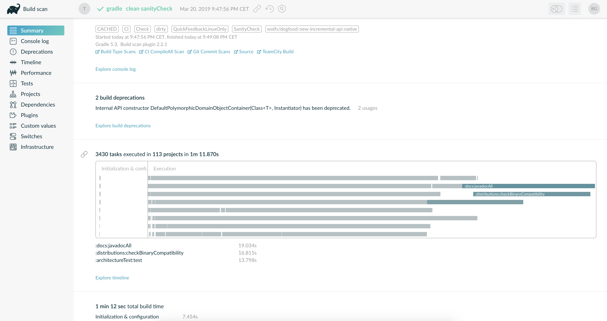
./gradlew --scan http://scans.gradle.com
Build Lifecycle
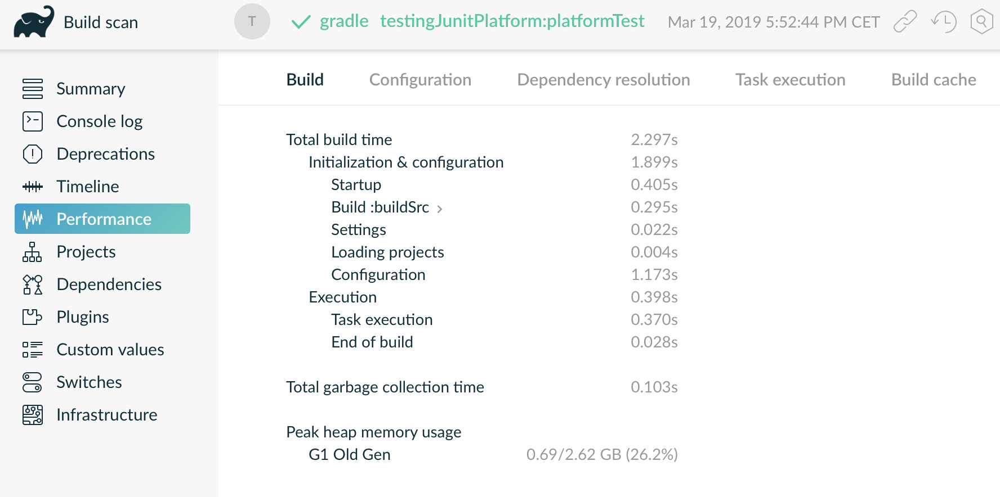
High GC time
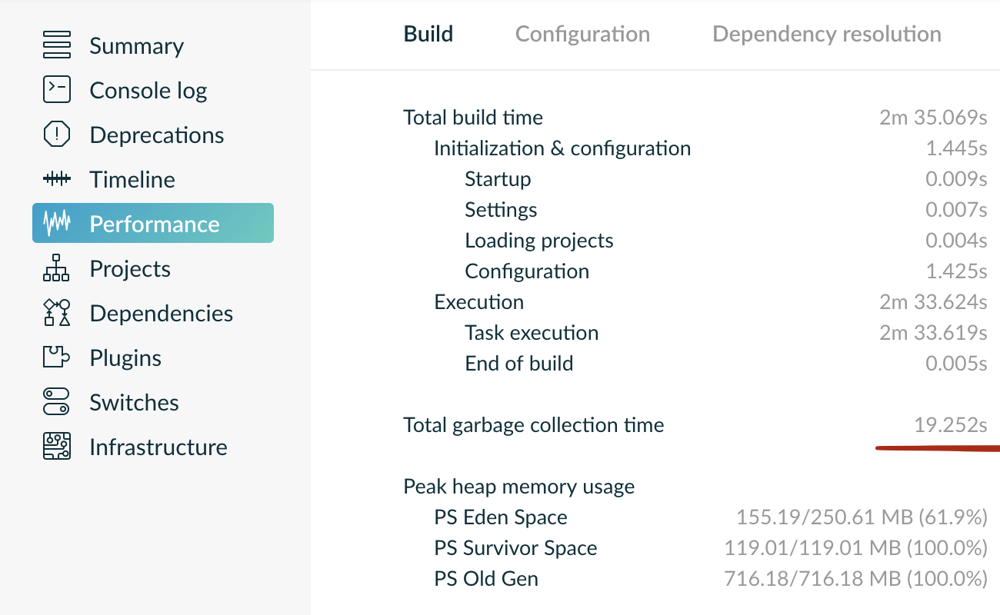
High GC time (fixed)
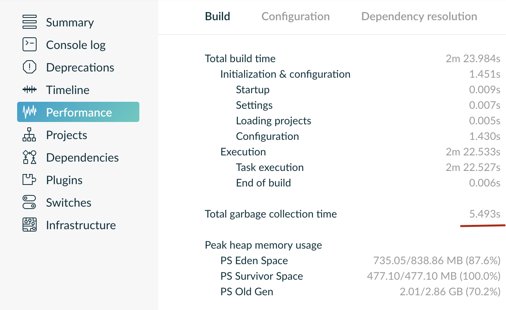
Red flags
initialization > 1s
long configuration
single line change
~=clean buildhigh gc time
Logic during initialization
Don’t do this!
// logic in settings.gradle
// brittle, can be slow!
new File('.').eachFileRecurse(groovy.io.FileType.DIRECTORIES) { dir ->
if (new File(dir,"build.gradle").exists()) {
def name = dir.toString()[1..-1].replaceAll('/',':')
include name
}}Configuration
Evaluating build scripts
Applying plugins
Running
afterEvaluate {}blocks
When?
on any Gradle run
Even
./gradlew helpor./gradlew tasksAndroid Studio sync
Slow plugin
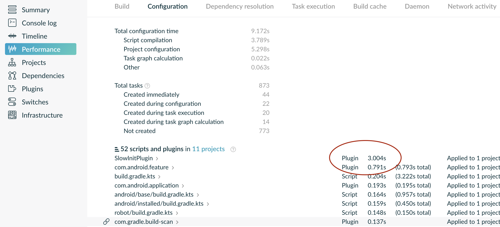
Be aware of inefficient plugins!
Resolution at configuration time
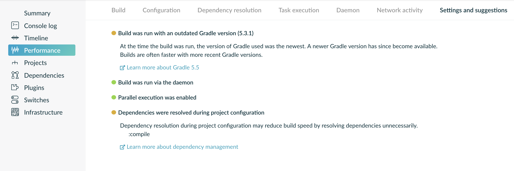
Avoid Dependency resolution at configuration time!
Eager Resolution
task fatJar(type: Jar) {
from configurations.runtime.collect {
it.isDirectory() ? it : zipTree(it)
}
with jar
classifier = 'fat-jar'
}Lazy Resolution
task fatJar(type: Jar) {
from {
configurations.runtime.collect {
it.isDirectory() ? it : zipTree(it)
}
}
with jar
classifier = 'fat-jar'
}Configuration Avoidance
tasks.register("fatJar", Jar) {
from configurations.runtimeClasspath.elements.map {
it.isDirectory() ? it : zipTree(it)
}
with jar
classifier = 'fat-jar'
}I/O at configuration time
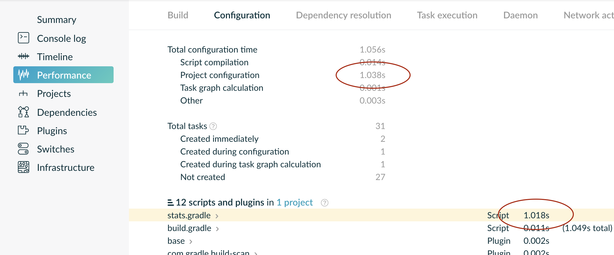
That build script seems expensive
I/O at configuration time
task projectStats {
def statsFile = new File(buildDir, 'stats.txt')
statsFile.parentFile.mkdirs()
def javaFiles = sourceSets.main.java.size()
def javaSize = sourceSets.main.java
.collect{it.text.bytes}
.flatten()
.sum()
statsFile.text = """
|SourceFiles: ${javaFiles}
|Source size: ${javaSize} bytes
""".stripMargin()
}Careful with custom tasks!
I/O at configuration time
task projectStats {
def statsFile = new File(buildDir, 'stats.txt')
input.files sourceSet.main.java
outputs.file statsFile
doLast {
statsFile.parentFile.mkdirs()
def javaFiles = sourceSets.main.java.size()
def javaSize = sourceSets.main.java
.collect{it.text.bytes}
.flatten()
.sum()
statsFile.text = """
|SourceFiles: ${javaFiles}
|Source size: ${javaSize} bytes
""".stripMargin()
}
}Don’t forget doLast{}
I/O at configuration time
task projectStats(type: ProjectStats) {
statsFile = new File(buildDir, 'stats.txt')
sources = sourceSet.main.java
}
class ProjectStats extends DefaultTask {
@InputFiles FileCollection sources
@OutputFile File statsFile
@TaskAction def stats() {
statsFile.text = """
|Files: ${sources.size()}
|Total: ${sources.collect{it.text.bytes}.flatten().sum()} bytes
""".stripMargin()
}
}Inefficient Plugins
// version.gradle
def out = new ByteArrayOutputStream()
exec {
commandLine 'git','rev-parse','HEAD'
standardOutput = out
workingDir = rootDir
}
version = new String(out.toByteArray())
// root 'build.gradle'
allprojects {
apply from:'$rootDir/version.gradle'
}Re-use expensive logic
// root 'build.gradle'
apply from:"$rootDir/version.gradle"
subprojects {
version = rootProject.version
}Variant explosion
variantFilter { variant ->
def flavorName = variant.flavors[0].name
def devFlavor = flavorName == 'dev'
if(!devFlavor && variant.buildType.name == 'release') {
variant.ignore = true
}
}Execution
Executing selected tasks
Incremental
Cacheable
Parallelizable
Incrementality
Nothing changed and outputs still there?
Executed tasks should be zero!
Non-incremental task
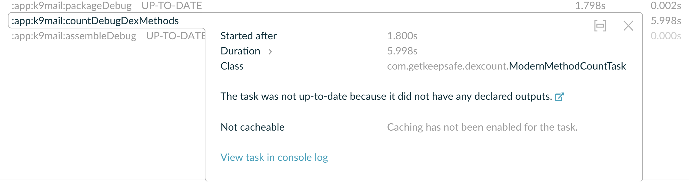
Changing task input
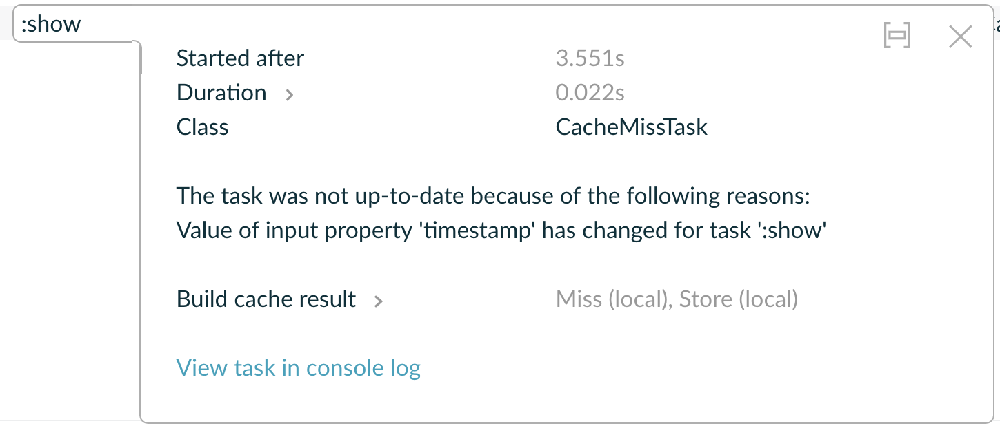
Faster Compilation
Modularization ⇒ Compile avoidance
Decoupled code ⇒ Faster incremental compilation
careful with annotation processing
Incremental Annotation processing
since Gradle 4.7
processors need to opt-in
kapt.incremental.apt = truesince kotlin 1.3.30
Dagger
build.gradle
javaCompileOptions {
annotationProcessorOptions {
arguments << ["dagger.gradle.incremental": "true"]
}
}Cacheability
Task has been run with same inputs before?
Pull its outputs from cache
org.gradle.caching = true
Local cache utilization
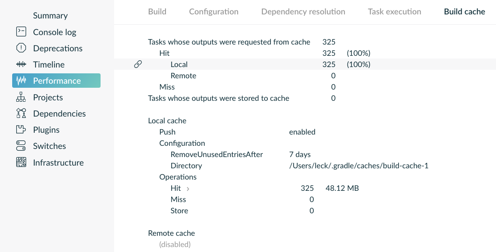
Local cache utilization
Many tasks are cacheable
Remote cache

Remote Cache Misses
input hash changes across environments
due to non-portable inputs
Talk by Nelson Osacky from SoundCloud:
https://www.youtube.com/watch?v=tHe4IC0fBKg
Parallelism
org.gradle.parallel = trueor--parallelfor decoupled modules
A non-parallel build
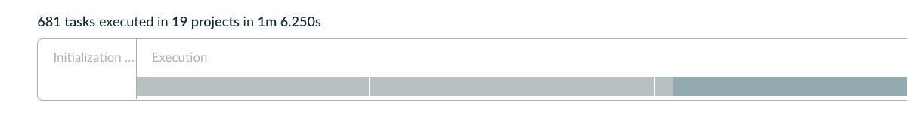
A parallel build
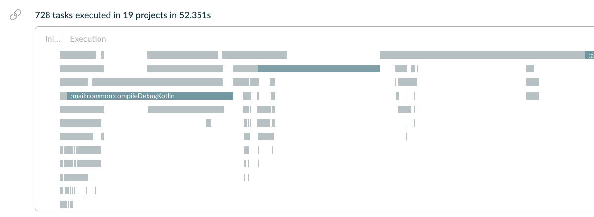
Keeping Track of Performance
Gradle Enterprise
all the builds of your organization
searchable
powerful dashboards
build comparisons
enterprise grade remote cache
supports Gradle and Maven
installed on premise within your organization
Conclusion
Takeaways
know your build
monitor and measure
avoid unnecessary configuration
re-use task outputs